Porting IQ 2D SDF Shadertoys to Unreal - Part 1
I've been looking at learning Unreal 5 material system for some UI stuff and I thought a good way of getting up to speed was to port Inigo Quilez 2D SDF shadertoys to Unreal.
The source article with all the SDF we're going to try can be found here
Initial Setup
Since my end goal is to make some UI shaders we're going to setup a UI material ! So we go right click in the content window -> Materials -> Material, I'm naming mine SDFMaterial for now.
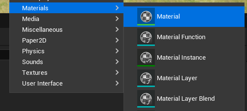
Open the material, go to the detail panel and set the domain to User Interface.
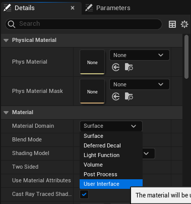
And now we're good to go !
The Simplest SDF function
The first SDF function we're going to implement is the circle since it's pretty simple and straightforward to visualize. The distance to a circle is the distance between the evaluated point and the circle center minus the radius. You'll see that all functions on Inigo's website skip the "distance between the evaluated point and the circle" part since we can just do those transformation before calling the function. This means that in all the functions we're going to write, the shape we're forming is assuming to be at coordinates (0, 0).
Aight let's see how to do it in practice !
To get our circle, we need 4 pieces :
- A way to get a point coordinate
- A node to store our circle's radius
- Some way to compute the length of a vector
- Some way to substract two quantities
Getting some UVs
Let's deal with the first point, since we're doing a UI shader we have access to the GetUserInterfaceUV node. This node offers the Normalize UV pin which will give us a coordinate vector in the [0, 1] range to play with.
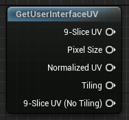
A good tip here is to plug the node into the Final Color pin of the output to see what we're dealing with.
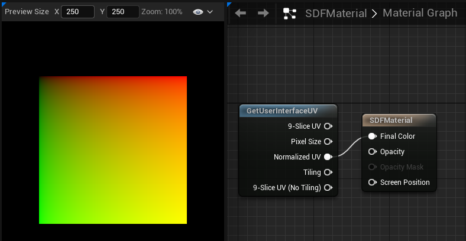
If you've never wrote any shader you might be confused at what you're looking at but this black-red-green-yellow gradient square is typical when viewing a 2D vector going smoothly between 0 and 1 on both axis, the square corners correspond to the [0, 0] (black), [1, 0] (red), [0, 1] (green), [1, 1] (yellow) vectors respectively.
Anyway, this just shows us that our Normalized UV pin does what we expect it to do :D
Constant nodes
Now for the radius, we might want to control that outside of the shader later but let's go the simplest way first and use a Constant node. We can set it's value to 0.25, since our space is in the [0, 1] range, using 0.25 as the radius should have our circle radius take 1/4 of the screen space.
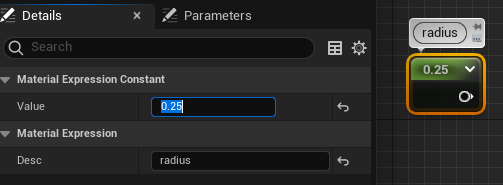
Vector Length
Third point ! The vector's length, there's a very straightforward VectorLength node we can use here
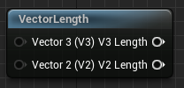
I was actually confused why there was a V3 and V2 inputs and outputs pins on it, those nodes are actually "material function" nodes that are built from more simpler node, we can double-click them to see the source !
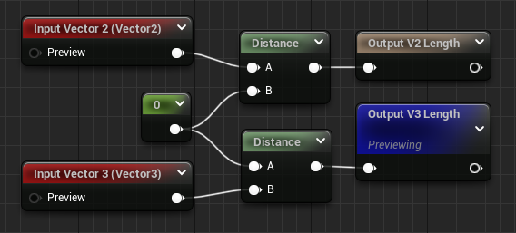
This makes some kind of sense, computing the length of a vector is equivalent to getting the distance between the point represented by the vector and the origin. It's a bit confusing coming from GLSL (and HLSL) since there's just a length primitive function, but if it works for them, it works for me.
Actual Math
Last point now, the last node is straightforward there's just a Substract node.
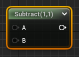
Result
Aight, let's wire everything up !
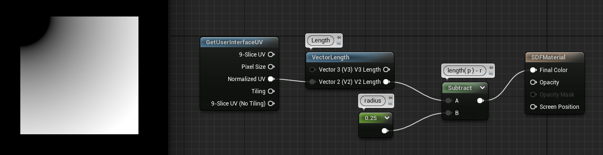
And we have our circle ! Except it's a little "fuzzy"... Also it's just a forth of a circle in the corner... Well this is all expected, as we said the SDF function assumes the circle is at the origin, and here the origin is the top left of the render space ! Also it's fuzzy because we're feeding the distance directly to the output, so the value is positive going up at the border and it's negative inside. The black part inside is actually negative values but the colors are clamped to 0 before going on the screen.
Before moving forward, let's move the circle to the middle of the screen and take care of the border !
Moving the Circle
We can move the circle by translating the initial UV by some vector, this is done using the same substract node as before, and we can get a vector with a Constant2Vector node. Center of the screen is [0.5, 0.5] so let's translate our UVs by this vector.
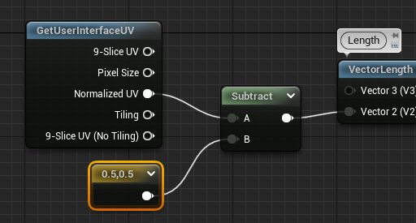
And tada ! Our circle is centered.
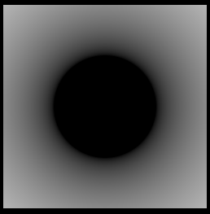
Clearing the Border
Finally let's take care of the fuzzy border before moving forward, for this we'll use the Step function. It's a bit confusing to use but it returns 0 when X < Y, so if we input our distance as X and 0 as Y, we should get full black everywhere negative (inside) and full white everywhere positive (outside).
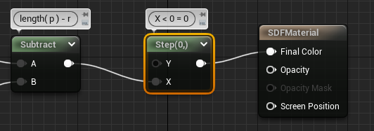
And here's our final result :
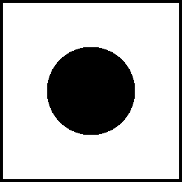
At this point we're able to draw a simple circle on a square quad, you'll see that trying this on anything but a square will stretch the circle strangely, also if we want more color than black and white we'll need a bit more stuff. But this was the simplest setup to get the more complicated stuff running later !
I haven't even referenced Inigo shadertoy or articles but this was about getting our feet in the unreal material door, we'll see in the next chapter how to do more complicated stuff !